I operate across the entire timber value chain - forest management and harvesting, computational design, robotic shaping of curved timber, and on-site construction - including the digital workflows that connect each stage.
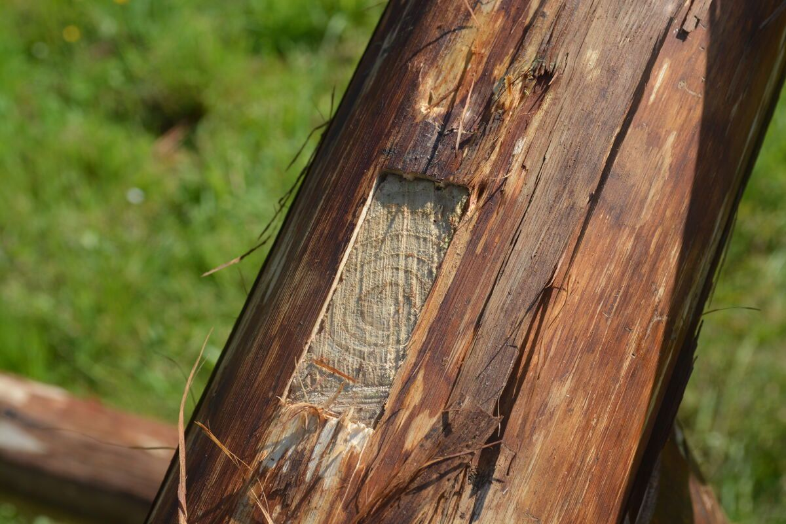
Learning forestry by living in the forest, and robotics alongside an expert, I can now generate cutting toolpaths for a KUKA robot directly from scanned tree geometry, enabling it to follow the unique form of each trunk. I follow projects all the way through, from standing trees I select to the finished structure.
Each stage below feeds the next - a tree felled in stage two becomes a robot toolpath in stage four, and a client's home in stage five stands in the same landscape assessed in stage one.
I work independently, across the whole process - forest management, felling, every stage of timber transformation, and sale. The goal is not short-term extraction, but ensuring that forests remain living, resilient ecosystems capable of supporting future generations despite existential obstacles: climate change, increasing human pressure, and the persistent belief that incremental adjustments will be enough.
Beyond declared certification schemes, my team developed Bois Suivis - literally, "tracked timber" - a field-verification protocol that lets a wood's end user check, on the ground, that stated forestry practices were actually followed. It's built to be checked, not just declared: a concrete proposal for keeping this world habitable.
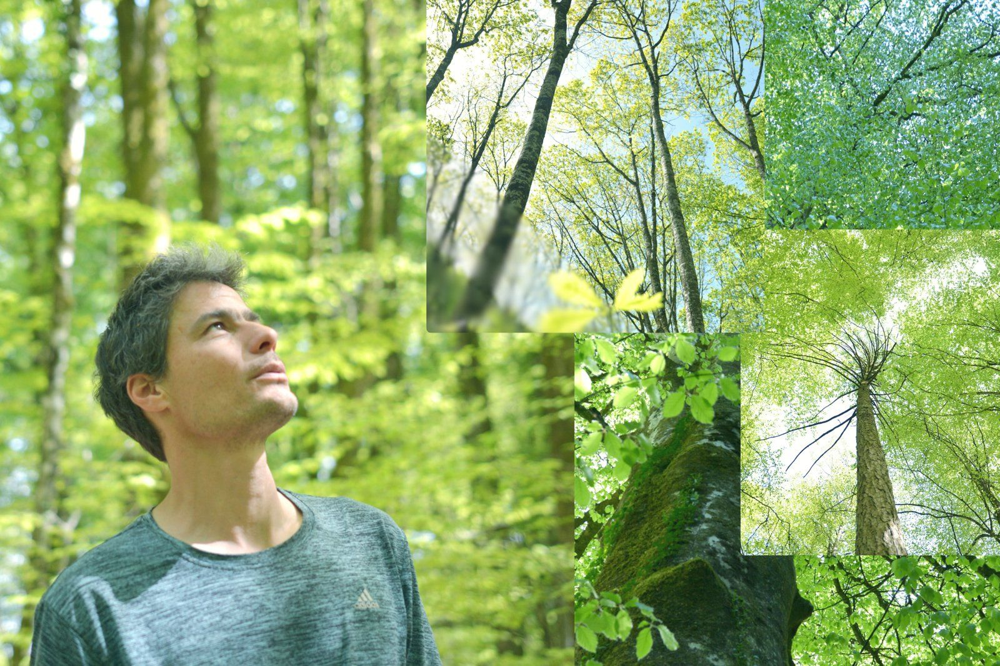
I fell and extract the timber myself - it keeps me in direct feedback with the rest of the chain. What a tree does in the forest, on the workshop floor, and on a real construction site all shape each other, within the same workflow - not just on paper.
Twelve years ago, I built my own skidding vehicle from a repurposed 4x4 fire-service truck chassis - new bodywork, crane installation, structural welding, taken through individual type-approval for road use. This original forestry machine lets me control the quality of the work on site directly, and adapt harvesting methods to each site's conditions.
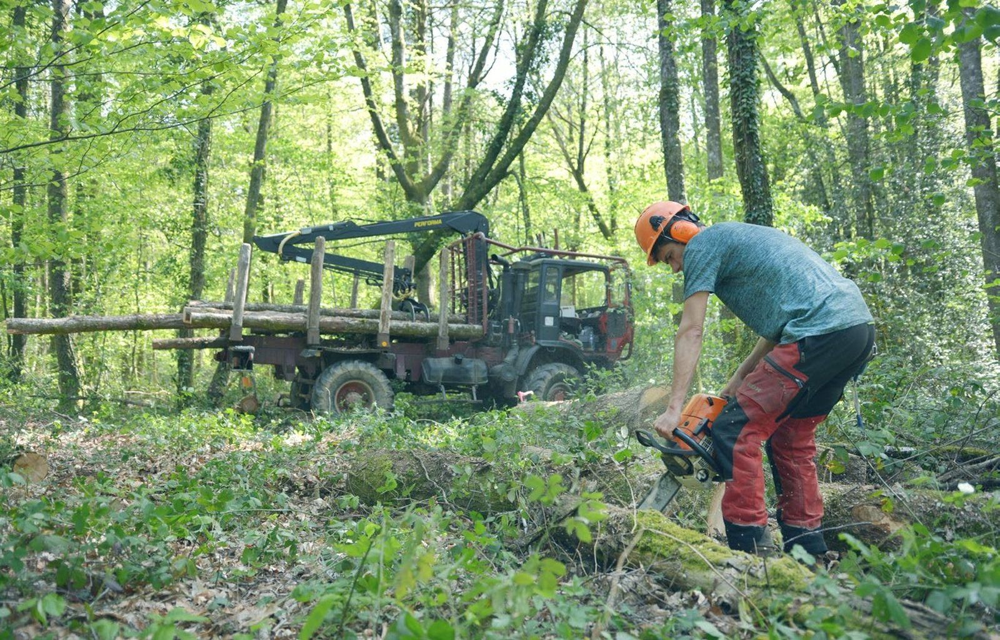
I design custom timber buildings from real trunks - round, naturally curved - fitted to each client's brief and often to an existing building I need to design around. Robotic shaping (stage four) makes this kind of natural, non-standard geometry buildable at a fraction of the previous cost.
I draw in Rhino 3D, then bring the proposal to life in TwinMotion - compositing the new structure into a photogrammetry scan of the existing site - for near-photorealistic renders that clients can already picture themselves in.
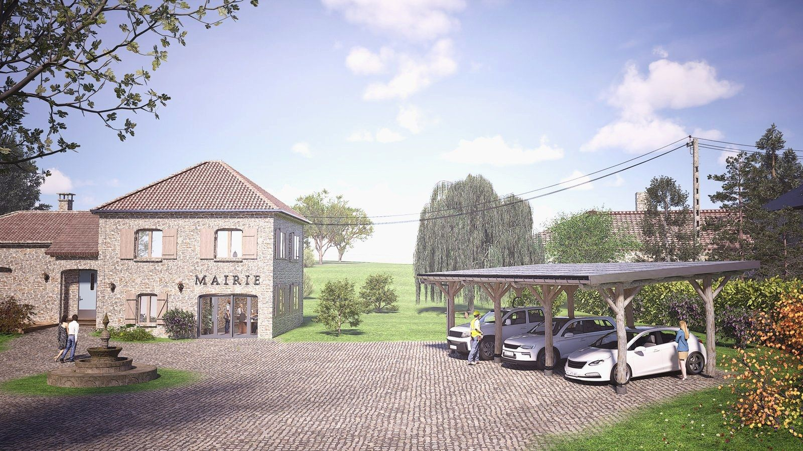
In collaboration with my mentor Ludovic Mallegol, I develop parametric workflows that generate cutting toolpaths for a seven-axis robot. The work is carried out at La Manufacture du Châtaignier - the wood fabrication workshop of Coop Monts et Barrages, an emerging innovation cluster based on a working farm.
The aim: let the robot adapt to the tree's actual curvature, rather than forcing the natural shape into a standard, rectilinear beam - carrying forward the genius of the living world. After two years of development, we're beginning to publish our results: "The tree dictates the shape: reversing the industrial paradigm in rural areas", in Construction Robotics (Springer).
And production is under way :
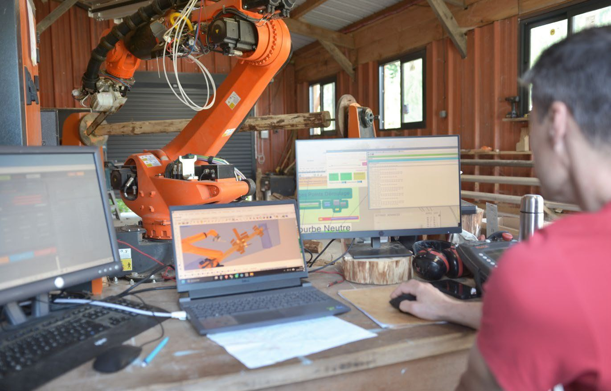
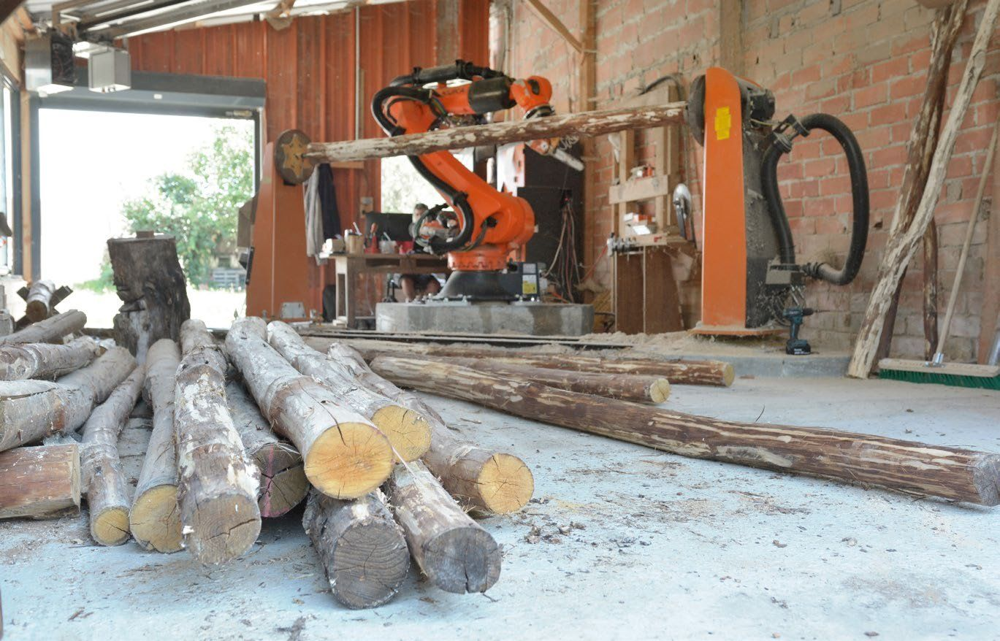
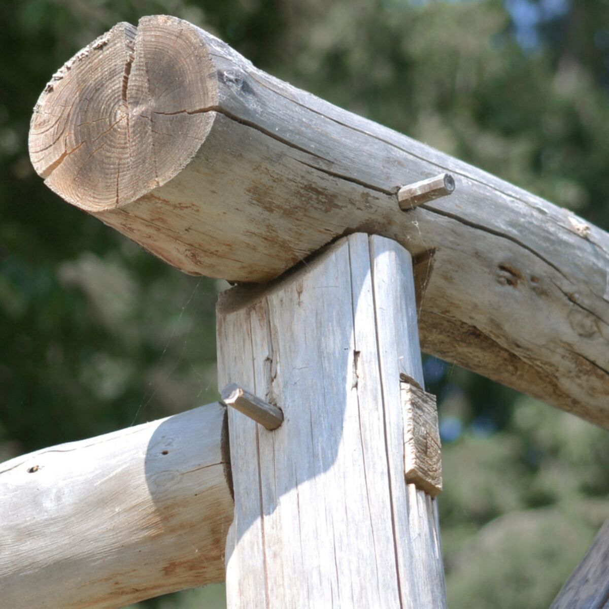
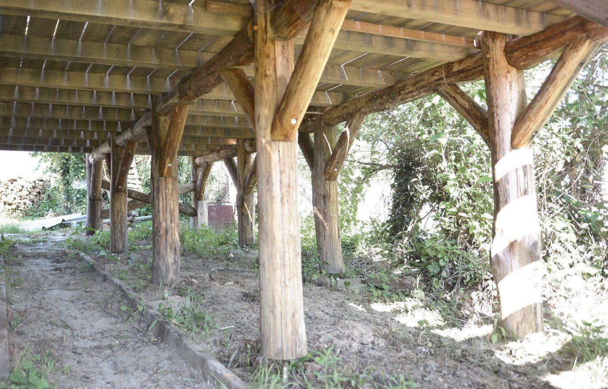
I install the finished structures myself on client sites - from site preparation and foundations to the final timber frame assembly - combining traditional timber craftsmanship with the precision of robotic fabrication. Trees can remain standing for decades, sometimes centuries - the very same level of structural stability we expect from a building. They are, in fact, a powerful source of inspiration.
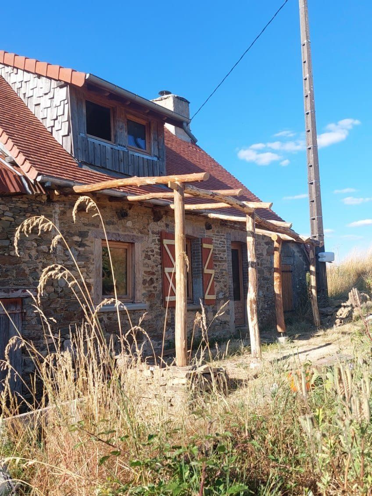
This is a small, fast-moving international research area. Here's where we fit in it.
Peer-reviewed article, Construction Robotics (Springer), on scan-to-trajectory robotic shaping of natural curved timber.
Presenting our workflow alongside the CITA - Aarhus University - SDU Odense research network working on robotic free-form timber fabrication.
Working with IBOIS - Timber Construction Laboratory, EPFL Lausanne, GC2D - Civil Engineering, Diagnosis and Durability Laboratory, Egletons, and the IUT du Limousin - Civil Engineering Department, Limoges.
Fifteen years running the full chain, forest to finished structure, with the software and robotics skills to take that further. Based in Limousin, close to a wild forest and a unique production site. Always glad to hear from people working on similar ground: research teams, technical exchange, guest teaching.
Gestion, sylviculture, et coupes en Creuse (23), Corrèze (19) et Haute-Vienne (87).
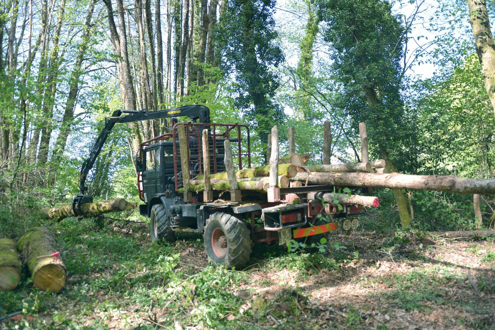
Arbres difficiles à proximité immédiate de bâtiments, réseaux ou zones à risque - interventions techniques maîtrisées.
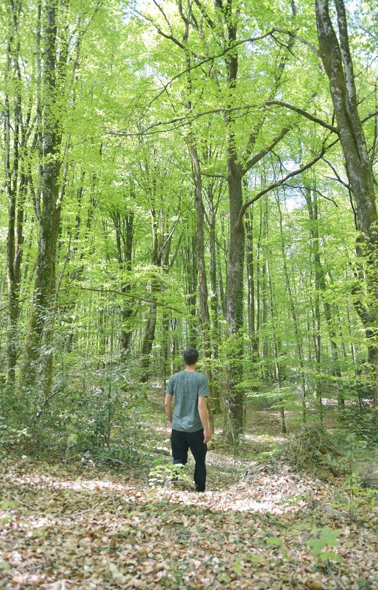